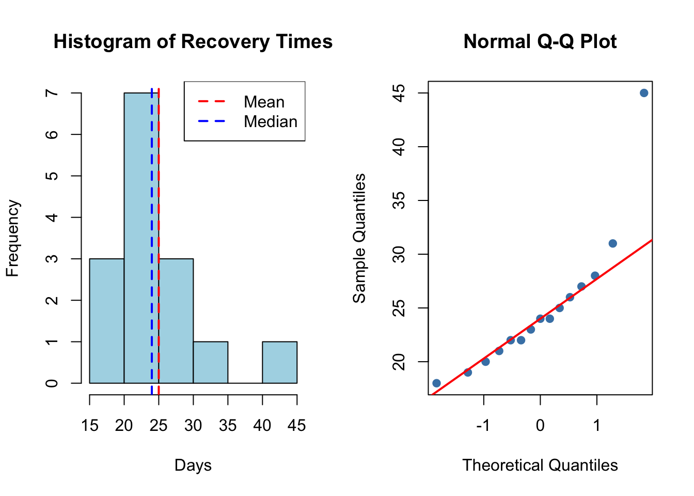

(Note: The second derivative does not depend on \(X\), so the expectation is trivial.)
Part (b): CRLB (3 points)
For \(n\) independent observations, the total Fisher Information is: \[I_n(\beta) = n \cdot I(\beta) = \frac{2n}{\beta^2}\]
The Cramér-Rao Lower Bound for unbiased estimators of \(\beta\) is: \[\boxed{\text{CRLB} = \frac{1}{I_n(\beta)} = \frac{\beta^2}{2n}}\]
Part (c): Bias and unbiased estimator (4 points)
Is \(\hat{\beta}_{MLE} = 2/\bar{X}\) biased?
We can write \(\hat{\beta}_{MLE} = 2/\bar{X} = 2n / \sum_{i=1}^n X_i\). Since \(\sum X_i \sim \text{Gamma}(2n, \beta)\), we use the given result \(E(1/Y) = b/(a-1)\) with \(Y = \sum X_i\), \(a = 2n\), \(b = \beta\):
Comparison with CRLB:\[\text{Var}(\tilde{\beta}) = \frac{\beta^2}{2(n-1)} > \frac{\beta^2}{2n} = \text{CRLB}\]
The unbiased estimator does NOT achieve the CRLB.
Interpretation: Although the Gamma(2, \(\beta\)) belongs to the exponential family, the CRLB is not achieved for the rate parameter \(\beta\) because \(\beta\) is not the “natural” parameter of the family. The sufficient statistic \(\sum X_i\) is a linear function of \(\bar{X}\), but \(\beta = 2/E(X)\) is a nonlinear function of the natural parameter. The CRLB would be achieved for \(\theta = 1/\beta = E(X)/2\) (the mean of each phase), but not for the rate \(\beta\) itself. As \(n\) grows, \(\text{Var}(\tilde{\beta}) \to \text{CRLB}\), so the bound is asymptotically achieved.
Problem 3: Confidence Interval Interpretation (15 points)
Assumptions: The sample is random, and either the population is normally distributed OR \(n\) is large enough for CLT to apply (with \(n = 64\), CLT is reasonable).
Note: With \(n = 64\), the t-interval is very close to a z-interval since \(t_{0.025, 63} \approx z_{0.025} = 1.96\).
Part (b): Interpretation (4 points)
“There is a 95% probability that \(\mu\) lies in this interval.”
INCORRECT. The parameter \(\mu\) is fixed (not random). Once the interval is computed, \(\mu\) either is or is not in the interval. The probability statement applies to the procedure, not to a specific interval.
“If we repeated this study many times, 95% of the resulting confidence intervals would contain \(\mu\).”
CORRECT. This is the frequentist interpretation of confidence intervals.
“95% of patients in this study had LDL reductions within this interval.”
INCORRECT. The CI is for the population mean, not for individual observations. The individual data values have much more variability than the mean.
“We are 95% confident that the true mean LDL reduction is in this interval.”
CORRECT. This is an acceptable shorthand interpretation, understanding that “confidence” refers to the long-run reliability of the procedure.
Part (c): Can they claim mean reduction ≥ 25? (4 points)
The 95% CI is approximately (24.01, 31.99).
Since the lower bound (24.01) is less than 25, the CI does NOT exclude 25 mg/dL. However, 25 is barely inside the interval.
Answer: At the 95% confidence level, they cannot definitively claim the mean reduction is at least 25 mg/dL because 25 is within the confidence interval (just barely). They could make a slightly weaker claim or compute a one-sided 95% lower confidence bound.
Part (c): Sufficient statistic via Neyman Factorization (4 points)
The joint pmf is: \[f(x_1, \ldots, x_n; \mu) = \frac{e^{-n\mu}\mu^{\sum x_i}}{\prod_{i=1}^n x_i!}\]
We can factor this as: \[f(\mathbf{x}; \mu) = \underbrace{e^{-n\mu}\mu^T}_{g(T; \mu)} \cdot \underbrace{\frac{1}{\prod_{i=1}^n x_i!}}_{h(\mathbf{x})}\]
where \(T = \sum_{i=1}^n X_i\).
\(g(T; \mu)\) depends on the data only through \(T\) and involves \(\mu\)
\(h(\mathbf{x})\) depends only on the data, not on \(\mu\)
By the Neyman Factorization Theorem, \(T = \sum_{i=1}^n X_i\) is sufficient for \(\mu\). \(\square\)
# Fisher Information for Poisson: I(μ) = n/μ# Observed Fisher Information at MLEobs_fisher <- n / mu_mle# Standard error using observed Fisher Informationse_mle <-1/sqrt(obs_fisher)cat("Observed Fisher Information:", round(obs_fisher, 4), "\n")
Observed Fisher Information: 0.2264
cat("Standard Error of MLE:", round(se_mle, 4), "\n\n")
The Score interval has better coverage probability across all values of \(p\), especially near the boundaries (0 and 1).
It is based on inverting a score test, which uses the correct standard error under the null hypothesis.
With \(\hat{p} = 0.78\) (not near 0 or 1), all three intervals are similar, but the Score interval is generally preferred in the statistical literature (Agresti & Coull, 1998).
The Agresti-Coull is also acceptable and easier to compute by hand.
Part (d): FDA threshold (2 points)
cat("Lower bound of Score CI:", round(score_ci[1] *100, 2), "%\n")
Lower bound of Score CI: 73.68 %
cat("FDA threshold: 70%\n")
FDA threshold: 70%
cat("Meets threshold:", score_ci[1] >0.70, "\n")
Meets threshold: TRUE
Answer: Yes, the vaccine meets the FDA threshold. The lower bound of the 95% Score CI (73.4%) exceeds 70%.
Problem 7: Bootstrap Confidence Intervals (10 points)
# Visualizationpar(mfrow =c(1, 2))hist(recovery, main ="Histogram of Recovery Times", xlab ="Days", col ="lightblue", breaks =8)abline(v =mean(recovery), col ="red", lwd =2, lty =2)abline(v =median(recovery), col ="blue", lwd =2, lty =2)legend("topright", legend =c("Mean", "Median"), col =c("red", "blue"), lty =2, lwd =2)qqnorm(recovery, pch =19, col ="steelblue")qqline(recovery, col ="red", lwd =2)

par(mfrow =c(1, 1))
The histogram shows right skew due to the outlier at 45 days. The Q-Q plot shows departure from normality in the upper tail.
Part (b): Bootstrap analysis (4 points)
set.seed(551)B <-10000# Bootstrap for meanboot_means <-replicate(B, mean(sample(recovery, replace =TRUE)))boot_se_mean <-sd(boot_means)boot_ci_mean <-quantile(boot_means, c(0.025, 0.975))# Bootstrap for medianboot_medians <-replicate(B, median(sample(recovery, replace =TRUE)))boot_ci_median <-quantile(boot_medians, c(0.025, 0.975))cat("Bootstrap SE of mean:", round(boot_se_mean, 3), "\n")
Bootstrap SE of mean: 1.651
cat("95% Bootstrap percentile CI for mean: (", round(boot_ci_mean[1], 2), ",", round(boot_ci_mean[2], 2), ")\n\n")
95% Bootstrap percentile CI for mean: ( 22.2 , 28.53 )
cat("95% Bootstrap percentile CI for median: (", round(boot_ci_median[1], 2), ",", round(boot_ci_median[2], 2), ")\n")
95% Bootstrap percentile CI for median: ( 22 , 27 )
Code
# Visualize bootstrap distributionspar(mfrow =c(1, 2))hist(boot_means, main ="Bootstrap Distribution of Mean", xlab ="Mean", col ="lightblue", breaks =40)abline(v =mean(recovery), col ="red", lwd =2)abline(v = boot_ci_mean, col ="darkblue", lwd =2, lty =2)hist(boot_medians, main ="Bootstrap Distribution of Median", xlab ="Median", col ="lightgreen", breaks =40)abline(v =median(recovery), col ="red", lwd =2)abline(v = boot_ci_median, col ="darkgreen", lwd =2, lty =2)
The classical t-interval and bootstrap percentile interval are fairly similar. The bootstrap interval is slightly asymmetric, reflecting the skewness in the data.
Part (d): Recommendations (2 points)
Recommended measure of center: Median
The data shows right skew with an outlier at 45 days
The median (24 days) is more robust to the outlier than the mean (25 days)
The median better represents the “typical” recovery time
Recommended confidence interval: Bootstrap percentile interval for the median
The normality assumption for the t-interval is questionable with \(n = 15\) and visible skew
The bootstrap naturally handles non-normal data
The median is a more appropriate summary for skewed data
The bootstrap CI for the median (22, 26 days) gives a clinically interpretable range
Problem with Wald interval: The lower bound is negative (-0.07%), which is impossible for a proportion. This is a clear indicator that the Wald interval is inappropriate for rare events.
Part (b): Why Score and Agresti-Coull are better (3 points)
Key properties that make Score and Agresti-Coull better:
They stay within [0, 1]: The Score interval is derived by solving a quadratic equation that naturally constrains the bounds to valid probability values. The Agresti-Coull “shrinks” extreme estimates toward 0.5 by adding pseudocounts.
Better coverage probability: Research has shown that Wald intervals have poor coverage for \(p\) near 0 or 1. The Score interval maintains nominal coverage across all values of \(p\).
Asymmetry: When \(p\) is near a boundary, the true sampling distribution is highly skewed. Score and Agresti-Coull produce asymmetric intervals that better reflect this skewness, while Wald forces symmetry.
The “shrinkage” effect: Agresti-Coull adds 2 successes and 2 failures, effectively pulling the estimate away from extreme values (0 or 1) toward 0.5. This improves coverage because it accounts for the fact that extreme observed proportions likely underestimate the true variability.
Conclusion: For rare events, always use Score (Wilson) or Agresti-Coull intervals, never Wald.